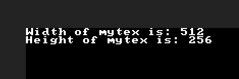

Texture system
Make sure your PixelsWorld version is
v3.3.0+
This section gives a detailed introduction of Texture system in PixelsWorld.
- newTex
- delTex
- getSize
- swapTex
- drawTo
- castTex
- blendTex
- copyTex
- savePNG,loadPNG,saveEXR,loadEXR,saveRAW,loadRAW
- rotateTex,flipTex,resizeTex,trimTex
Texture id
In PixelsWorld, every texture is represented as an integer. It is called texId. The basic texIds provided by PixelsWorld are as followed.
| texId | Globals in Lua | Globals in GLSL | Globals Shadertoy | Description |
|---|---|---|---|---|
-3 |
OUTPUT |
Inaccessible | Inaccessible | Output texture |
-2 |
TEMP |
PW_TEMP_LAYER |
_PixelsWorld_PW_TEMP_LAYER |
Cache texture |
-1 |
INPUT |
AE_INPUT_LAYER |
_PixelsWorld_AE_INPUT_LAYER |
Input texture |
0 |
PARAM0 |
0 |
0 |
Layer parameter 0 texture |
1 |
PARAM1 |
1 |
1 |
Layer parameter 1 texture |
... |
PARAM... |
... |
... |
... |
9 |
PARAM9 |
9 |
9 |
Layer parameter 9 texture |
You can also create your own texId. The method will be covered below.
How they work
Normally, Ae sends a picture to PixelsWorld to process. PixelsWorld loads it to the INPUT texId, writes result to OUTPUT texId. Finally blits all pixels to Ae.
What is TEMP texId
Because OpenGL doesn't support read and write to a same texture at the same time. PixelsWorld provides TEMP texId to hold the last shading results (Means the TEMP texId only make sense in Lua mode and you called glsl function twice or more). You can use getColor(PW_TEMP_LAYER,uv); in glsl code to sample colors in TEMP texId.
Create texture
Use newTex(width,height) to create a texture. Returns a texId. (a random integer)
Delete texture
Use delTex(id) to delete a texture.
In most case, you don't have to delete texture by yourself. PixelsWorld will release all texture memory at the end of each frame.
Size of texture
Use getSize(id) to get the size of a texture.
getSize.lua
version3()
mytex = newTex(512,256)
w,h = getSize(mytex)
println("Width of mytex is: " .. w)
println("Height of mytex is: " .. h)

Swap textures
Use swapTex(id1,id2) to swap the pixels data of id1 and id2.
swapTex.lua
version3()
tex1 = newTex(128,128)
tex2 = newTex(256,256)
w,h = getSize(tex1)
println("tex1 size: " .. w .. ", ".. h)
swapTex(tex1,tex2)
w,h = getSize(tex1)
println("tex1 size after swapped: " .. w .. ", ".. h)

Set drawTo
Use drawTo(id) to set the texture the objs would be drawn. The default drawTo texId is OUTPUT. Note that PixelsWorld only blits pixels in OUTPUT to Ae, no matter what the drawTo texId is. Here are 3 approaches you can send pixels in other texId to OUTPUT:
Cast texture
Use castTex(toTexId,fromTexId) to cast pixels data from fromTexId to toTexId. E.g. You can cast pixels in PARAM0 to OUTPUT.
castTex.lua
version3()
castTex(OUTPUT,PARAM0)
You can also specify the cast range. (The origin is left top corner)
castTex(toTexId,fromTexId,to1x,to1y,to2x,to2y)castTex(toTexId,fromTexId,to1x,to1y,to2x,to2y,from1x,from1y,from2x,from2y)
Cast all pixels by default.

Blend textures
Use blendTex(toTexId,fromTexId,blendRule) to blend fromTex to toTex by rule blendRule
blendRulecan be one ofNORMAL,ADD,SUBTRACT,MULTIPLY,DIVIDE,MAX,MIN.blendRulecan be blend rule(string).Amenas input pixels oftoTexIdBmeans input pixels offromTexIdCmeans output pixels oftoTexIdE.g. you can specify your rule to blendPARAM0andINPUTtogether.
blendRule.lua
version3()
castTex(OUTPUT,INPUT) -- Cast INPUT texture to OUTPUT firstly.
blendTex(OUTPUT,PARAM0,"C=A+B") -- Blend PARAM0 to OUTPUT.
Actually the "C=A+B" will be processed to following code inside PixelsWorld.
blendRuleGLSL.frag
#version 330 core
out vec4 outColor;
in vec2 uv;
in vec2 uv2;
uniform sampler2D inLayerA;
uniform sampler2D inLayerB;
void main(){
vec4 A = texture(inLayerA,uv);
vec4 B = texture(inLayerB,uv2);
vec4 C = A;
C=A+B // Your blend rule is combined here.
;
}
Same with castTex, blendTex also supports range specifying:
blendTex(toTexId,fromTexId,blendRule,to1x,to1y,to2x,to2y)blendTex(toTexId,fromTexId,blendRule,to1x,to1y,to2x,to2y,from1x,from1y,from2x,from2y)
Copy texture
Use copyTex(refTexId) to copy texture. Returns new texId.
Texture IO
Use savePNG(utf8Path,texId),loadPNG(utf8Path) to save or load PNG image.
Use saveEXR(utf8Path,texId),loadEXR(utf8Path) to save or load EXR image.
Use saveRAW(utf8Path,texId),loadRAW(utf8Path) to save or load MiLai original raw memory image.
Supported image specifications are listed below.
| Format | Library | Supported compression algorithms | Color format |
|---|---|---|---|
| PNG | cute_headers | DEFLATE compliant decompressor zlib(RFC 1950) | RGBA,clamped 8bit unsigned integer per channel. |
| EXR | tinyexr | NONE,RLE,ZIP,ZIPS,PIZ,ZFP | RGBA,HDR 32bit floating point per channel. |
| RAW | (None) | MiLai original format.(See figure below) | RGBA,HDR 32bit floating point per channel. |

Load PNG image to scene:
loadPNG.lua
version3()
local mypng = loadPNG([[d:\test.png]]) -- Replace to your path.
castTex(OUTPUT,mypng) -- Cast pixels from mypng to OUTPUT.
Save OUTPUT texId to local:
savePNG.lua
version3()
--Draw something to OUTPUT
move(width/2,height/2)
rotate(time)
triangle()
--End drawing.
savePNG([[d:\test.png]],OUTPUT) -- Save OUTPUT as PNG to local disc. Replace to your path here.
- Change
PNGtoEXRto read/write EXR file.- Some local path might need running Ae under the Administrator mode.
Edit texture
Use rotateTex(texId,times) to rotate texture 90*timesdegrees, rotateTex(texId) equals to rotateTex(texId,1)
Use flipTex(texId,flipV) to mirror flip a image. flipV is a boolean. When flipV is true, flip image vertically, and horizontally otherwise.
Use resizeTex(texId,width,height) to resize texture.
Use trimTex(texId,p1x,p1y,p2x,p2y) to trim texture. The origin of p1x,p1y,p2x,p2y is left top corner.